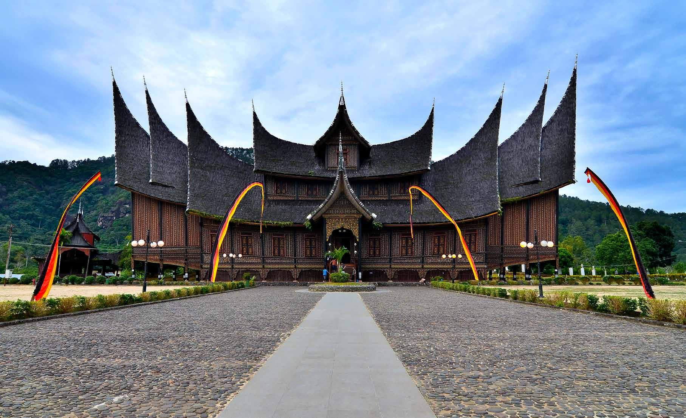
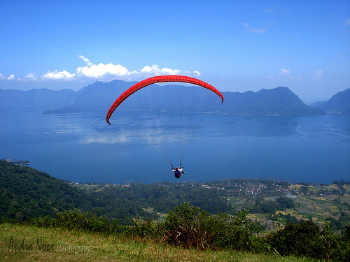
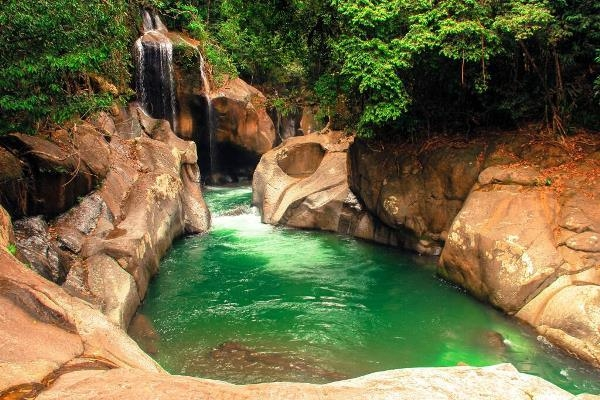

Istano Basa Pagaruyung yang terletak di kecamatan Tanjung Emas, kota Batusangkar, kabupaten Tanah Datar, Sumatera Barat, merupakan replika dari bangunan yang asli, dimana bangunan asli dulunya terletak diatas bukit Batu Patah dan dibakar habis pada tahun 1804 oleh kaum paderi yang pada masa itu memerangi bangsawan dan kaum adat. Arsitektur Istano Pagaruyuang ini dibangun dengan batang - batang kayu yang dihias dengan 60 ukiran yang menjelaskan filosofi dan budaya Minangkabau. Istana sendiri memiliki 3 lantai, 72 tiang dan gonjong sebagaimana pada umumnya Rumah Gadang, yang dilengkungkan serupa tanduk dari 26 ton serat ijuk. Istana ini juga dilengkapi dengan lebih dari 100 replika furnitur dan artefak antik Minang, yang bertujuan agar istana dihidupkan kembali sebagai pusat budaya Minangkabau serta objek wisata di Sumatera Barat.

Puncak Lawang adalah sebuah puncak dataran tinggi terletak di kecamatan Matur, Kabupaten Agam, Sumatra Barat. Puncak Lawang merupakan tempat terbaik untuk menikmati panorama Danau Maninjau dari ketinggian. Puncak lawang ini memiliki ketinggian sekitar 1210 mdpl. Di Puncak Lawang juga dapat memacu adrenalin dengan menjajal Paralayang atau Paragliding sambil menikmati view Danau Maninjau.
Air Terjun Nyarai adalah salah satu air terjun yang terletak di Kabupaten Padang Pariaman, Provinsi Sumatra Barat. Air Terjun setinggi 8 meter ini terletak di kawasan Hutan Gamaran Salibutan Lubuk Alung Cagar Alam Nasional Bukit Barisan I. Air terjun ini dikelilingi oleh pepohonan yang rindang dan bebatuan yang sangat besar. Jika diperhatikan, air yang turun dari Air Terjun Nyarai ini seperti dibendung oleh dua batu besar sebelum akhirnya masuk ke dalam kolam dengan air jernih berwarna hijau sehingga sangat indah dipandang mata. Diatas kolam menggelantung ayunan akar pohon yang bisa dijadikan permainan alam yang menarik. Wisatawan juga bisa merasakan nikmatnya bisa menyatu dengan alam karena Air Terjun Nyarai ini jauh dari kebisingan kota.